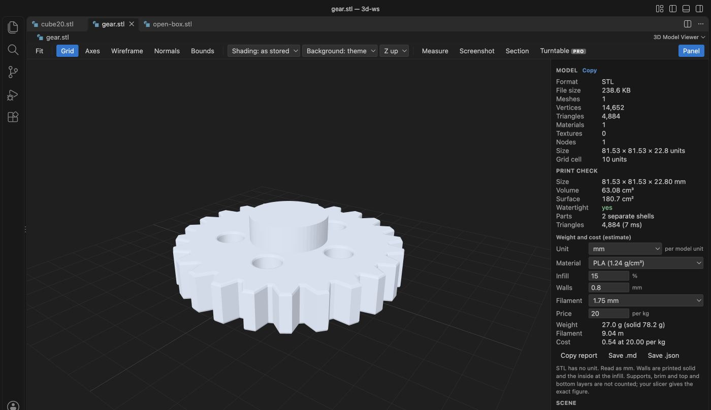

Open files in VS Code and Cursor / 3D and imaging
Calculate the volume of an STL file
Install STL Viewer by Zovo (3D Model Viewer) in VS Code, open the .stl file and press "Run print check" in the side panel. You get the size, volume and surface area, whether the mesh is watertight, and the weight, filament length and cost for the material, infill and price you set. Viewing and measuring are free; the print check is Zovo Pro (USD 19 once) with 3 free tries.
Free, MIT license. Extension ID zovo.3d-model-viewer, version 0.2.0. Needs VS Code 1.90.0 or newer.

Steps in VS Code
- Install 3D Model Viewer from the Marketplace, or press Ctrl+P (Cmd+P on macOS) and run
ext install zovo.3d-model-viewer. - Click the .stl file in the Explorer. It opens in the 3D view.
- Open the side panel and press "Run print check".
- Set the unit if the file is not in millimetres, then the material (PLA, PETG, ABS, ASA, TPU, nylon, PC or resin), infill, wall thickness, filament diameter and price per kg.
- Press "Mark problems" to see open and non-manifold edges on the model. Copy the report or save it as .md or .json.
Steps in Cursor, Windsurf or VSCodium
- Open the Extensions view with Ctrl+Shift+X (Cmd+Shift+X on macOS).
- Search for
zovo.3d-model-viewerand click Install. Cursor, Windsurf and VSCodium install from Open VSX, where it is published aszovo/3d-model-viewer. - If your editor has no gallery, download the .vsix from the Open VSX page and run "Extensions: Install from VSIX...".
- Then use it the same way as in VS Code.
What 3D Model Viewer handles
- Volume and surface area of the mesh, and the number of separate parts.
- Watertight check: open edges, non-manifold edges, faces that point the wrong way and zero-area triangles.
- A section view (Zovo Pro): cut along X, Y or Z, read the area and perimeter, and save the outline as SVG in millimetres.
- STL, OBJ, PLY, 3MF, GLB and glTF files open free, with measure, wireframe and normals.
What it does not do
- Weight and cost are estimates: walls count as solid and the inside at the infill. Supports, brim and top and bottom layers are not counted; your slicer gives the exact figure.
- STL has no unit. The viewer reads it as millimetres unless you pick another unit.
- It checks the mesh. It does not repair it.
Free and Zovo Pro
Free, and staying free: opening STL, OBJ, PLY, 3MF, GLB and glTF, turning and measuring the model, wireframe, normals, the grid and animations.
Zovo Pro adds these tools to STL Viewer. Each one works 3 times on your computer before it asks for a license. Nothing about Pro shows when you open a file: no popup, no countdown, no banner.
- Print check: size, volume, surface, watertight check with the problem edges drawn, and weight, filament and cost for 8 materials.
- Section view: cut along X, Y or Z, with area, perimeter and an SVG outline in millimetres.
- Turntable export: a 360 degree GIF or 72 PNG frames.
Zovo Pro costs USD 19 once. It is not a subscription, and one purchase covers every Zovo VS Code extension. Today it also covers the Pro tools in Hex Viewer, Postgres & MySQL Query Client and DOCX Viewer, and Pro tools added to other Zovo extensions later.
Two ways to unlock it:
- GitHub Sponsors: pick the "$19 one time" tier. Then, in VS Code, click a Pro tool and pick "Unlock with GitHub Sponsors" (or type "GitHub Sponsors" in the Command Palette) and sign in with the same GitHub account. A monthly sponsorship of USD 10 or more that is still running counts too.
- PayPal, no GitHub account needed: send USD 19 by PayPal with "Zovo Pro" in the note, then post the transaction ID with the Zovo Pro key form (a public GitHub issue, so post only the ID). The license key goes to the email address of your PayPal account within a day. Click a Pro tool and pick "I have a license key" (or type "license key" in the Command Palette) and paste it. The key is checked on your computer, with no network call.
A team of 5: USD 59 once by PayPal, with "Zovo Pro Team" in the note. Every rule and every Pro tool is on the Zovo Pro page.
In JetBrains IDEs (IntelliJ IDEA, PyCharm, WebStorm, CLion and others)
- 3D Model Viewer. Views GLB, glTF, STL and OBJ files in JetBrains IDEs (2,831 downloads). Zovo has no JetBrains 3D plugin.
Other options
- Your slicer. PrusaSlicer, Cura and Bambu Studio show filament use and weight after slicing. Free.
- Meshmixer or MeshLab. Free desktop tools that compute volume and can repair a mesh.
- STL Viewer (
mtsmfm.vscode-stl-viewer, 45,715 installs, on Open VSX). The most installed STL viewer for VS Code. It shows the model; its listing does not mention volume.
Install counts and Open VSX status were checked on 9 November 2026. Descriptions in quotes are the extensions' own.
Questions
How do I calculate the volume of an STL file?
The mesh must be closed (watertight). The volume is then the sum of the signed volumes of the triangles. The print check does this and tells you if the mesh is not closed.
Why do I need a watertight check?
A slicer cannot tell inside from outside on an open mesh, so prints get holes or missing walls. The check lists open and non-manifold edges and draws them on the model.
What is free?
Opening, turning, measuring, wireframe, normals and animations. The print check, the section view and the turntable export are Zovo Pro, USD 19 once, with 3 free tries each.
More about 3D Model Viewer
Read the 3D Model Viewer page for every feature and setting, or the source code on GitHub.
Related guides
- View STL files in VS Code
- Open DICOM and NIfTI files in VS Code
- Open a .docx Word file in VS Code
- Open an Excel .xlsx file in VS Code
Zovo Pro and support
Zovo Pro: USD 19 once, every Zovo viewer. It turns on the Pro tools in this extension and in the other Zovo extensions you use. The free features stay free.
After a card payment your license key shows on the next page. Paste it with the command "Zovo Pro: Enter a key".
You can also support the work with no Pro:
Need your format supported?
Open a format request with a sample file, and I reply there whether it can be done. For USD 299 once, through this GitHub Sponsors tier, I add your file format or a missing feature to this extension, with tests, within 7 days.